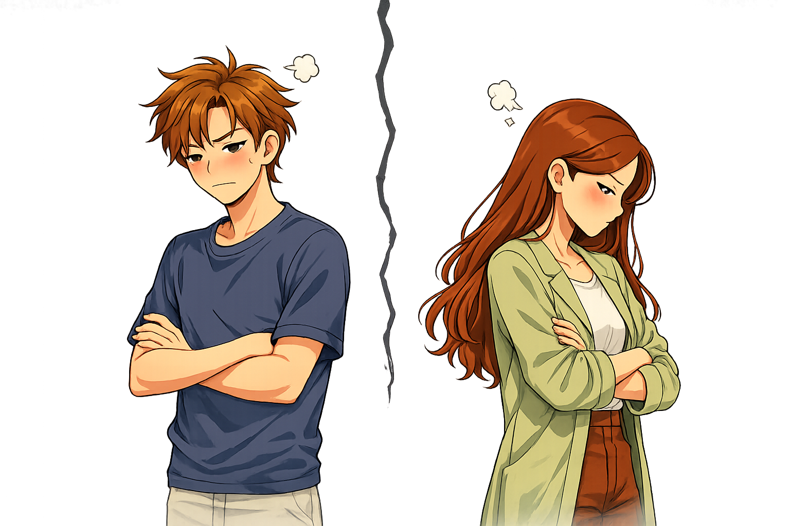

“Yeah,” Alex said, shrugging. “Weve known each other for a while.”
Lila crossed her arms. “Ive never heard you mention her before.”
Alex hesitated. “It just… never came up.”
That hesitation was all it took. Lila stood up from the couch. “Right,” she said, her voice tight. “Because random girls texting you at night is something you just forget to mention.”
Before Alex got the chance to try and explain further, Lila shook her head and stormed out.
The door slamed shut before he could even get another word in.
Over the next few weeks they tried to talk about it, but something had shifted.
The trust that used to make everything feel easy was suddenly fragile.
Eventually, Lila decided she couldnt take it anymore. She never looked at Alex the same again, no matter what he said or did to prove her different.
It wasnt necessarily the message that ended it all. It was the doubt that followed it.
